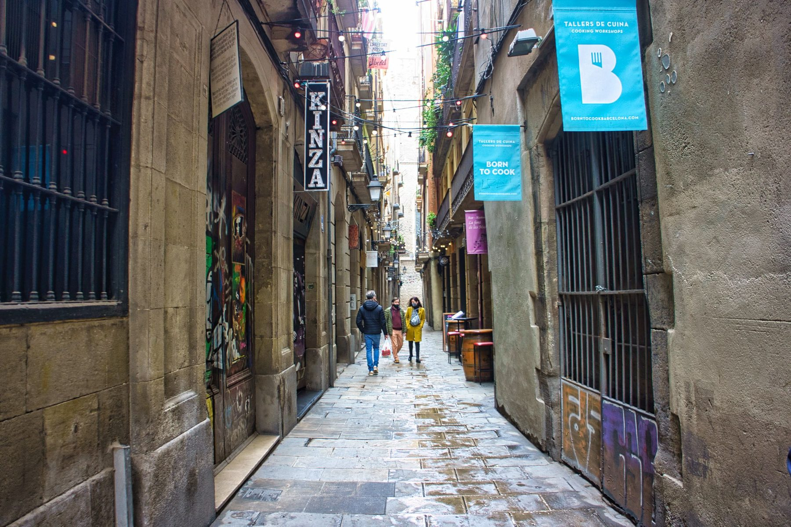
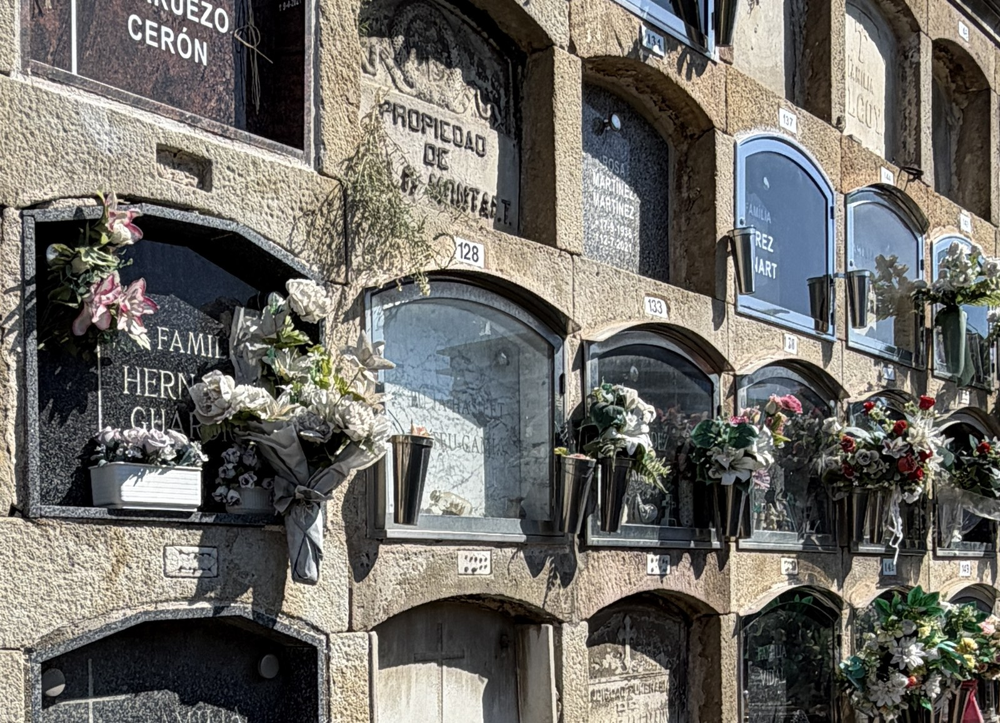
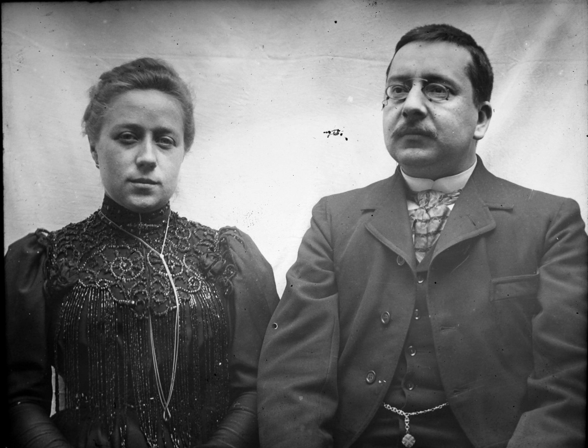

Banys Vells, 15 4t (1891)
Audioguia
Prem play per escoltar la història
Àudio pendent de gravació
L'última casa
Aquest és l'últim domicili conegut de Pasqual: el quart pis del carrer dels Banys Vells, 15.
La família s'hi va traslladar el 1891, abans del 17 de desembre. Els documents no permeten precisar-ne ni el dia ni el mes.
I per primera vegada en quaranta anys, van canviar de barri.
Sobre el mapa són quatre-cents metres escassos: totes les cases anteriors queden a menys de cinc minuts a peu. Però entremig hi ha el carrer de la Princesa, obert el 1853, i creuar-lo volia dir sortir del barri de Sant Pere i entrar a la Ribera. Una altra parròquia, un altre mercat, uns altres veïns.
Havien passat quaranta anys al voltant de Santa Caterina, entre telers i obradors del tèxtil. Ara vivien a vuitanta metres de Santa Maria del Mar, i era en aquella basílica —no a Sant Pere— on d'ara endavant es casarien i batejarien.
El carrer
Els Banys Vells és un carreró fosc i estret, d'aquells on dues persones amb prou feines es creuen. Mireu amunt: la façana del davant és a quatre passes, i la llum del sol només hi entra a migdia.
El nom ve d'uns banys públics que ja funcionaven aquí al segle XIII. El 1207 es documenta la venda de la meitat d'aquells banys; al segle XVI ja havien desaparegut i només en va quedar el nom. Abans se'n deia carrer del Sitjar, per una teuleria que hi havia, i el carrer tal com el trepitgeu es va acabar de traçar cap al 1350.
Llegiu els noms dels carrers del voltant i tindreu el cens del barri: Sombrerers, Assaonadors, Esparteria, Argenteria, Espaseria, Mirallers, Flassaders. La Ribera havia estat el barri dels gremis i dels mercaders —els que van pagar Santa Maria del Mar entre 1329 i 1383— i cada carrer duia el nom de l'ofici que hi treballava.
El 1891, però, d'aquella prosperitat només en quedaven els noms i les pedres. Els palaus del carrer de Montcada, a cent metres, feia dècades que estaven llogats a pisos i magatzems. Les fàbriques marxaven cap al Poblenou i les famílies benestants cap a l'Eixample, i darrere hi quedava un veïnat de menestrals, jornalers, botiguers i gent d'ofici repartida en pisos petits d'edificis antics.
Els Godes hi encaixaven exactament. Un quart pis, com sempre; però aquesta vegada, amb un fill que cantava al Liceu i es casaria a la basílica del final del carrer.
La mort de Pasqual i Rosa
Pasqual Godes Gomis va morir en aquesta casa el 17 de desembre de 1891, a les tres de la matinada. Tenia 67 anys.
El registre atribueix la mort a una pneumònia. Va ser enterrat l'endemà al Cementiri del Poblenou.
Rosa Caballeria Madiroles va continuar vivint a Banys Vells 15 després de quedar-se vídua. Va morir en aquesta mateixa casa el 24 de desembre de 1893, als 59 anys, d'una apoplexia segons el registre. Va ser enterrada al Poblenou el dia de Nadal.
Dos Nadals seguits, els dos amb un enterrament. Aquesta casa va veure marxar la generació que havia arribat de Castelló quaranta anys abans.
On són enterrats
Tots dos van anar a parar al Cementiri del Poblenou, a tres quilòmetres d'aquí. El recinte havia obert el 1819, després que la Guerra del Francès destruís l'anterior, i va ser el primer gran cementiri de Barcelona situat fora de les muralles: una ciutat dels morts amb carrers, illes i departaments, projectada per Antonio Ginesi.
Quan Pasqual hi va ser enterrat, les muralles que havien definit la Barcelona de la seva arribada ja no existien. El recorregut funerari des de Banys Vells fins al Poblenou travessava, sense voler, tota la transformació urbana que li havia tocat viure.

Toqueu la imatge per veure la paret sencera
Localitzador funerari
Pasqual Godes Gomis
Illa 1a, Departament 3r Interior, pis 3r, número 128. Enterrat el 18 de desembre de 1891, l'endemà de morir. La sepultura es conserva i l'autor d'aquesta experiència n'ha comprovat personalment la ubicació.
Rosa Caballeria Madiroles
Illa 2a, Departament 1r Exterior, pis 7, número 1504. Enterrada el dia de Nadal de 1893. No compartia sepultura amb Pasqual, i les seves restes es van traslladar a l'ossera general el 30 de desembre de 1988, en caducar la concessió.
Van morir a la mateixa casa, amb dos anys de diferència, i van acabar en dues illes diferents del mateix cementiri. La d'ell encara hi és; la d'ella ja no.
Artur Godes i Emília Hurtado

Al quart pis, segona porta del número 15, Artur Godes Caballeria hi va viure entre 1891 i 1896 una etapa decisiva de la seva vida.
Músic de professió, va ser tenor i mestre de capella de Santa Maria del Mar. Des de 1893 va treballar com a comprimari de la companyia d'òpera italiana del Gran Teatre del Liceu, interpretant nombrosos papers secundaris: el comprimari és el cantant que sosté l'obra sense sortir mai al cartell, el que fa de missatger, de criat, de capità.
El 23 de juny de 1894 es va casar a la basílica de Santa Maria del Mar amb Emília Hurtado Giró. Ell tenia 26 anys i ella 22.
Emília havia nascut a Barcelona el 29 d'abril de 1872, al carrer del Cuc, 5. Venia d'una família barcelonina per part de pare i tarragonina per part de mare: el seu pare, Emili Hurtado Rusca, havia estat sabater i després conserge de l'Escola Oficial de Nàutica; la seva mare, Rosa Giró Estil·les, era natural de Constantí.
El 14 d'abril de 1895 va néixer en aquesta mateixa casa el seu primer fill, Emili Godes Hurtado, que es convertiria en un fotògraf destacat. Anys després, Emili es va casar amb Antònia Diago Almuzara i, amb els seus fills, va donar origen a la branca familiar dels Godes Diago.
Així, Banys Vells 15 no va ser només l'últim domicili de Pasqual: va ser també el lloc on va començar a formar-se una nova generació de la família.
Qui va viure a Banys Vells 15?
El 1891, Banys Vells 15 es va convertir en la llar d'una família nombrosa. Hi van arribar a conviure fins a set persones: Pasqual Godes Gomis i Rosa Caballeria Madiroles; els seus fills Dolors, Artur, Pau i Mercè; i Emília Hurtado Giró, futura esposa d'Artur.
La composició de la llar va anar canviant durant els anys següents: Pasqual va morir el 1891, Rosa el 1893, Artur i Emília es van casar el 1894 i el 1895 va néixer el seu primer fill, Emili Godes Hurtado. Dolors també hi va formar la seva pròpia família, amb Francesc Ferrer Caparà. El fill de tots dos, Francesc Ferrer Godes, va néixer i va morir en aquesta casa el 1901.
Altes i baixes de l'habitatge
-
1891
Arribada
Hi arriben Pasqual (67) i Rosa (57), acompanyats pels seus fills Dolors (31), Artur (23), Pau (18) i Mercè (17).
-
17 de desembre de 1891
Mort de Pasqual
Va morir a l'habitatge als 67 anys, a causa d'una pneumònia.
-
24 de desembre de 1893
Mort de Rosa
Va morir també a Banys Vells 15, als 59 anys.
-
23 de juny de 1894
Casament d'Artur i Emília
Es van casar a la basílica de Santa Maria del Mar. Artur tenia 26 anys i Emília, 22.
-
14 d'abril de 1895
Naixement d'Emili Godes Hurtado
El primer fill d'Artur i Emília va néixer al mateix habitatge. Més endavant es convertiria en fotògraf i es casaria amb Antònia Diago Almuzara, donant origen a la branca Godes Diago.
-
Cap al 1895
Marxa de Pau
Va deixar Banys Vells per iniciar una vida independent.
-
1896
Marxa d'Artur, Emília, Mercè i el petit Emili
Es van traslladar a Sant Pere Mitjà 12.
-
Abans de 1901
Dolors es queda a Banys Vells
En algun moment anterior a 1901 es va casar amb Francesc Ferrer Caparà, natural de Martorell, que es va incorporar a l'habitatge.
-
13 d'octubre de 1901
Naixement de Francesc Ferrer Godes
El fill de Dolors i Francesc va néixer a Banys Vells 15.
-
29 de novembre de 1901
Mort de Francesc Ferrer Godes
Va morir a la mateixa casa amb tot just un mes i mig de vida.
-
Entre 1901 i 1915
Un segon fill de Dolors i Francesc
Van tenir un altre fill, que tampoc no va sobreviure. La memòria familiar en conserva la causa amb tres paraules: «ofegat per la dida». La dida era la dona que alletava la criatura quan la mare no podia fer-ho, i sovint dormia amb el nadó al llit; el perill d'ofegar-lo mentre dormien era prou conegut perquè els bisbats hi advertissin des de segles enrere.
-
Cap al 1915
Marxa de Dolors i Francesc
Dolors, als 55 anys, i Francesc deixen Banys Vells i se'n van a Sant Gervasi, al carrer de Bertran, on feia uns quants anys que s'hi havia instal·lat una part de la família. Amb ells s'acaba la presència dels Godes a Ciutat Vella, seixanta-tres anys després que Pasqual hi arribés.
Trenta-nou anys
De l'arribada a Barcelona el 6 de gener de 1852 a la mort el 17 de desembre de 1891 hi ha trenta-nou anys i vuit domicilis. Tots caben en poc més de mig quilòmetre de ciutat vella.
Context Espanya
Maria Cristina exercia la regència. La llei electoral de 1890 havia restablert el sufragi universal masculí i les eleccions generals de 1891 es van celebrar sota aquest nou marc.
«Universal», però, continuava excloent les dones.
Context Catalunya
El catalanisme polític anava prenent forma després del Memorial de Greuges de 1885, mentre el moviment obrer recuperava visibilitat i organització.
Cultura, llengua, demandes econòmiques i qüestió social no formaven un únic projecte, sinó debats diferents que compartien l'espai públic.
Context Barcelona
La ciutat posterior a l'Exposició de 1888 projectava modernitat: nous passeigs, arquitectura de ferro, enllumenat i infraestructures. El ferment del Modernisme començava a fer-se visible.
La ruta dels Godes recorda que aquella transformació coexistia amb pisos alts a la ciutat vella, malaltia i cures familiars.
Consulta de l'Arxiver
A les eleccions generals de 1891, a qui incloïa l'anomenat sufragi universal?